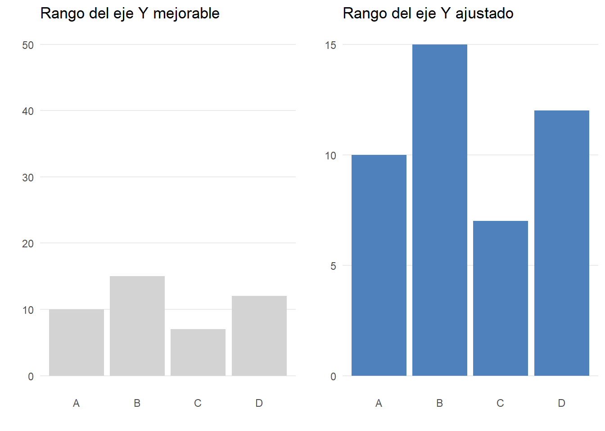
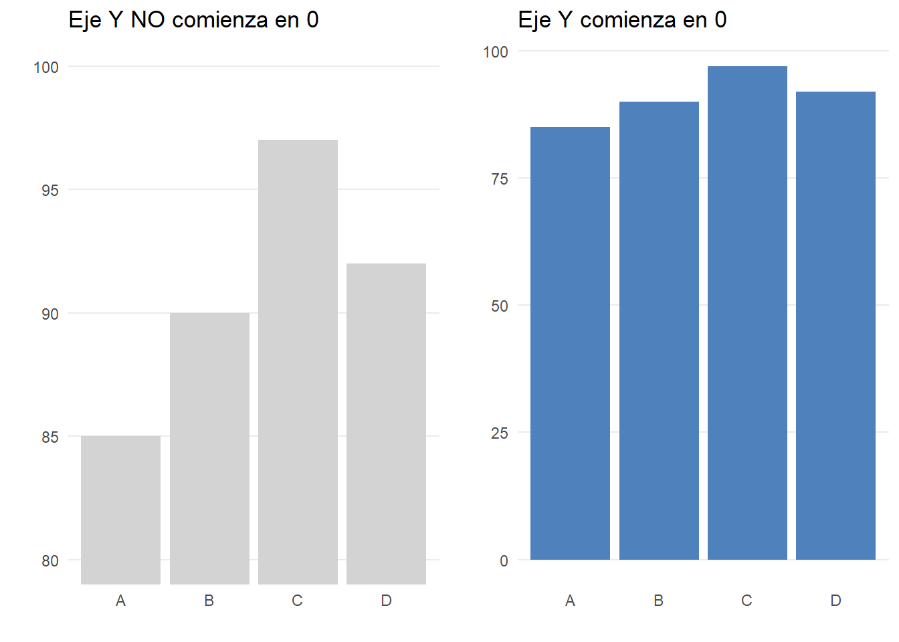
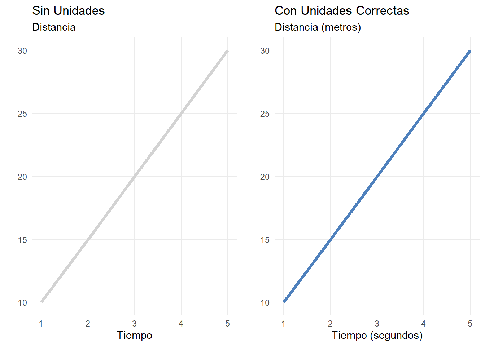
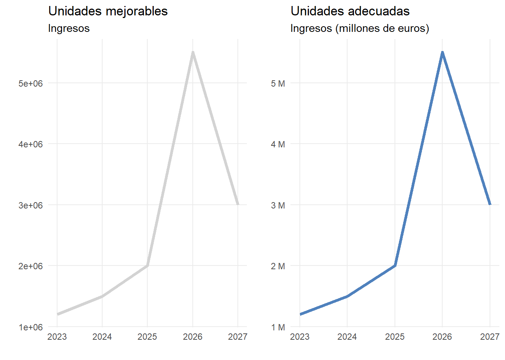
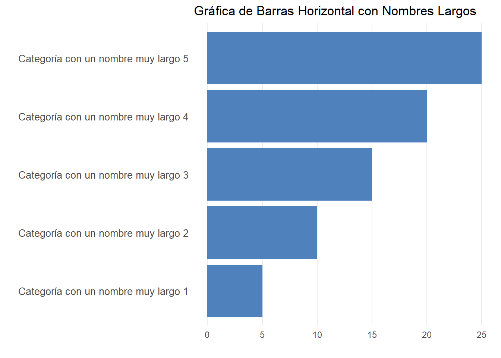
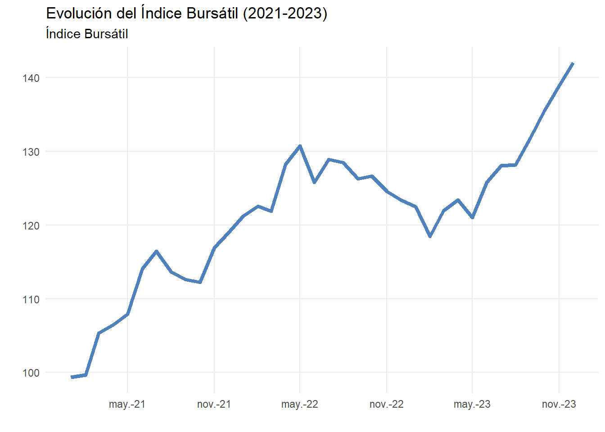
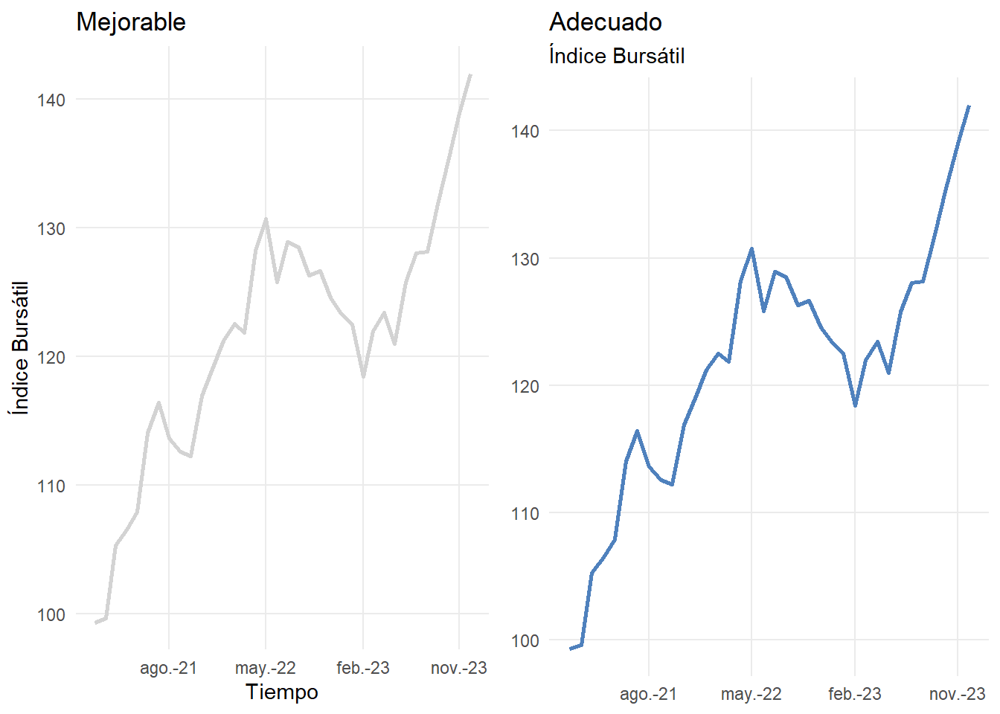

5 Ejes
AL DISEÑAR los ejes de una gráfica es importante tener en cuenta una serie de consideraciones para asegurar que los datos sean presentados de manera clara, precisa y fácilmente comprensible,
Primeramente, es importante que el rango de los ejes refleje adecuadamente los valores de los datos que se están representando. El uso de rangos excesivamente amplios o demasiado estrechos puede distorsionar la interpretación de los datos, lo que puede llevar a una percepción incorrecta de la información como se muestra en la Figura 5.1.
Es muy recomendable que el rango de los ejes en una gráfica de barras comiencen en cero ya que las barras deben preservan una proporcionalidad visual entre la longitud y la cantidad que representan. Un principio elemental es que si tus números están representados por la longitud o altura de objetos —barras, en este caso— la longitud o altura debe ser proporcional a esos números (Cairo 2019). En caso contrario, puede exagerarse las diferencias entre las magnitudes representadas, de manera que una pequeña diferencia se puede interpretar mucho más grande, como es el caso de la Figura 5.2.
Si fuera necesario que el eje no comenzará en el cero debe indicarse claramente en el gráfico. Otra opción es mostrar la diferencia respecto a un valor de referencia.

Otro aspecto esencial es que las etiquetas de los ejes sean claras y precisas, representando correctamente las unidades de medida o las categorías correspondientes. Es importante incluir las unidades cuando sea necesario, como metros, euros o segundos, para asegurar que el lector entienda la magnitud de los datos presentados (véase Figura 5.3. Si las unidades seleccionadas no son adecuadas, el lector puede confundirse o perder el contexto de los datos.

Al representar cantidades monetarias, es preferible utilizar términos como “miles” o “millones” en lugar de mostrar números largos y difíciles de interpretar. Así, en lugar de presentar 1.200.000 es más claro mostrarlo como 1,2 millones como se puede comprobar en la Figura 5.4. Además, es importante mantener la consistencia en las unidades utilizadas a lo largo del gráfico. Si se están combinando diferentes sistemas de medida, como kilómetros y millas, es esencial aclararlo explícitamente para evitar malentendidos.

El tamaño de la fuente debe ser lo suficientemente legible para garantizar una lectura cómoda de las etiquetas.
La orientación de las etiquetas debe facilitar una lectura fluida que no requiera un esfuerzo excesivo. En aquellos casos donde las etiquetas del eje X sean muy largas, la primera alternativa será orientar el gráfico en horizontal. Sirva la Figura 5.5 a modo de ejemplo. A ser posible hay que evitar colocar las etiquetas oblicuas o en vertical.

Otra posibilidad es omitir ciertas etiquetas para dejar espacio entre las mismas. En lugar de sobrecargar el espacio con texto innecesario, se incluyen las etiquetas mínimas para poder interpretar el gráfico como se hace la Figura 5.6.

Los títulos de los ejes deben incluirse sólo sin son necesarios. Es posible que el título del eje aporte información redundante o que se pueda suplir con el subtítulo. Por ejemplo, en una gráfica que involucra el paso del tiempo es muy probable que se pueda omitir el título del eje X, como ocurre en el ejemplo de la Figura 5.7

En caso de ser necesario incluir el título del eje es importante evitar que sea excesivamente largo o confuso.